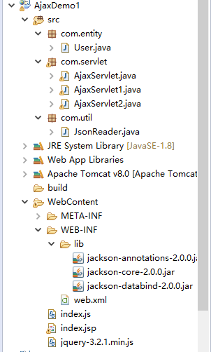
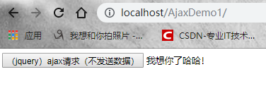
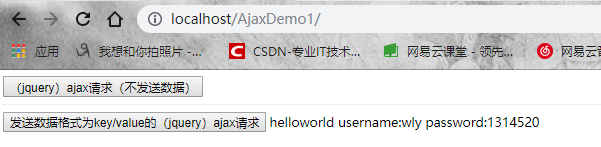
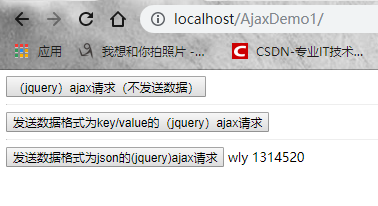
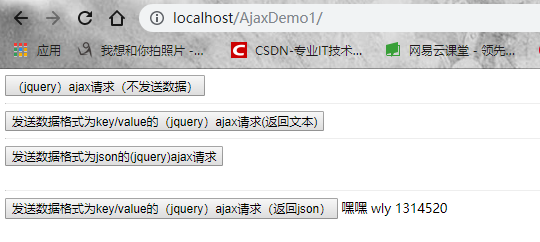

1. jQuery
jQuery是一个JavaScript函数库，极大的简化了JavaScript编程，很容易学习。jQuery是目前最流行的开源js框架，并且提供了大量的扩展。
2. Ajax
Ajax(Asynchronous JavaScript and XML，异步JavaScript和XML)时一种创建交互式网页应用的网页开发技术，它并不是一项新的技术，其产生的目的是用于实现页面的局部刷新。通过Ajax技术可以使之前的应用程序在每次提交时不用进行页面的整体刷新，从而提升操作的性能。
3. GET和POST
两种最常用的 HTTP 方法是：GET 和 POST。
定义：GET是从指定的资源请求数据，POST是从指定的资源提交要被处理的数据。
数据内容：GET请求的数据附加在url之后，只允许ASCII字符（采用ASCII编码），请求的数据会暴露在地址栏中。POST请求会把请求的数据放在HTTP请求包的包体中，也允许二进制数据，不会把数据暴露在地址栏。
数据长度：GET有限制，在使用GET请求时，数据大小会受到url长度的限制（URL 的最大长度是 2048 个字符）。POST无限制。
安全性：GET 的安全性较差（与POST相比），因为所发送的数据是 URL 的一部分。在发送密码或其他敏感信息时绝不要使用 GET ！POST 比 GET 更安全，因为参数不会被保存在浏览器历史或 web 服务器日志中。
4. Jackson
Jackson是当前用的比较广泛的，用来序列化和反序列化json的Java开源框架。Jackson社区相对比较活跃，更新速度也比较快， 从Github中的统计来看，Jackson是最流行的json解析器之一，Spring MVC的默认json解析器便是Jackson。
5. Servlet处理（jQuery）Ajax请求（不发送数据/发送key/value数据/发送json数据）
开发环境：eclipse+jsp+jQuery+servlet+tomcat+ajax
5.1 Servlet处理（jQuery）Ajax请求（不发送数据，返回普通文本）
(1) 搭建环境：
在eclipse中新建Java web项目（会自动导入JRE System Library包），比如我把项目名字写为AjaxDemo1，并将项目部署到tomcat服务器上，下面是eclipse中项目的目录结构：

我们先不用管lib中的jar包。注意这里有一个jquery-3.2.1.min.js，这是jQuery的开发包，我们可以在网上下载，把这个js文件复制粘贴到WebContent目录下即可。下面我会一步一步分析。下面进行开发。
(2) 编写index.jsp文件
1 <%@ page language="java" import="java.util.*" pageEncoding="UTF-8"%>
2
3 <%-- <%@ taglib uri="http://java.sun.com/jsp/jstl/core" prefix="c"%> --%>
4 <%
5 String path = request.getContextPath();
6 String basePath = request.getScheme() + "://" + request.getServerName() + ":" + request.getServerPort()
7 + path + "/";
8 %>
9 <!DOCTYPE html>
10 <html>
11 <head>
12 <base href="<%=basePath%>">
13 <title>I LOVE YOU</title>
14 <link rel="stylesheet" type="text/css" href="">
15 <script type="text/javascript" src="index.js"></script>
16 <script type="text/javascript" src="jquery-3.2.1.min.js"></script>
17
18
19 </head>
20 <body>
21
22
23 <button id="mybutton" value="异步请求服务器" onclick="fun1()" >（jquery）(jQuery)ajax请求（不发送数据）</button>
24 <spand id="show" />
25
26 <br/>
27 <hr/>
28
29
30 <button id="mybutton1" value="异步请求服务器" onclick="fun2()" >发送数据格式为key/value的（jquery）ajax请求</button>
31 <spand id="show1" />
32
33 <br/>
34 <hr/>
35 <button id="mybutton2" value="异步请求服务器" onclick="fun3()" >发送数据格式为json的(jquery)ajax请求</button>
36 <spand id="show2" /><br/>
37
38 </body>这里我们实现了三个按钮，并且调用了对应的函数。我们先来看第一个按钮（id="mybutton"）。这个文件引入了2个js文件。一个是我们自己编写的index.js文件，另一个是我们使用jQuery框架开发时所用的js文件。我把index.jsp，index.js，jquery-3.2.1.min.js都放在了WebContent目录下（方便操作）。
(3) 编写index.js文件
1 /**
2 *
3 */
4 //使用jquery提交ajax请求（不携带数据）
5 function fun1(){
6
7 $.ajax({
8
9 type:"POST", //发送方式
10 url:"AjaxServlet", //请求地址
11 data:"", //数据为空
12 success:function(data){ //成功后的回调函数
13
14 $("#show").html(data); //页面展示内容
15
16 }
17 });
18 }
19
20
21 //使用jquery提交key/value数据（ajax请求）
22
23 function fun2(){
24
25 $.ajax({
26
27 type:"POST",
28 url:"AjaxServlet1",
29 data:"username=wly&password=1314520", //key/value数据
30 success:function(data){
31
32 $("#show1").html(data);
33
34 }
35 });
36
37 }
38
39
40 //使用jquery提交json数据（ajax请求）
41
42 function fun3(){
43
44 var user={ //符合json数据格式规范的javascript对象
45 "username":"wly",
46 "password":"1314520"
47 };
48 $.ajax({
49
50 type:"POST",
51 url:"AjaxServlet2",
52 contentType:"application/json;charset=UTF-8", //发送数据到服务器时所使用的内容类型
53 data:JSON.stringify(user), //将javascript对象转化为json字符串
54
55 //预期的服务器响应的数据类型。服务器返回json字符串。jquery会自动把json转化为js对象
56 dataType:"json", //相当于调用JSON.parse（data）方法。此时我们省去即可。
57 success:function(data){
58
59 $("#show2").html(data.username+" "+data.password);
60
61 }
62 });
63 }观察fun1()函数，data为空，很简单，代码都有注释，这里不做过多解释。体现出jQuery的风格，简单易用。
(4) 编写Srvlet文件
package com.servlet;
import java.io.IOException;
import java.io.PrintWriter;
import javax.servlet.ServletException;
import javax.servlet.http.HttpServlet;
import javax.servlet.http.HttpServletRequest;
import javax.servlet.http.HttpServletResponse;
public class AjaxServlet extends HttpServlet {
protected void doGet(HttpServletRequest request, HttpServletResponse response)
throws ServletException, IOException {
response.setContentType("text/html;charset=UTF-8");
PrintWriter out = response.getWriter();
out.print("我想你了哈哈！");
out.close();
}
protected void doPost(HttpServletRequest req, HttpServletResponse resp) throws ServletException, IOException {
this.doGet(req, resp);
}
}
代码很简单，就返回一句话（普通文本）。没啥好说的。
(5) web.xml文件配置Servlet
<?xml version="1.0" encoding="UTF-8"?>
<web-app xmlns:xsi="http://www.w3.org/2001/XMLSchema-instance" xmlns="http://java.sun.com/xml/ns/javaee" xsi:schemaLocation="http://java.sun.com/xml/ns/javaee http://java.sun.com/xml/ns/javaee/web-app_3_0.xsd" id="WebApp_ID" version="3.0">
<display-name>AjaxDemo</display-name>
<welcome-file-list>
<welcome-file>index.html</welcome-file>
<welcome-file>index.htm</welcome-file>
<welcome-file>index.jsp</welcome-file>
<welcome-file>default.html</welcome-file>
<welcome-file>default.htm</welcome-file>
<welcome-file>default.jsp</welcome-file>
</welcome-file-list>
<servlet>
<servlet-name>AjaxServlet</servlet-name>
<servlet-class>com.servlet.AjaxServlet</servlet-class>
</servlet>
<servlet>
<servlet-name>AjaxServlet1</servlet-name>
<servlet-class>com.servlet.AjaxServlet1</servlet-class>
</servlet>
<servlet>
<servlet-name>AjaxServlet2</servlet-name>
<servlet-class>com.servlet.AjaxServlet2</servlet-class>
</servlet>
<servlet-mapping>
<servlet-name>AjaxServlet</servlet-name>
<url-pattern>/AjaxServlet</url-pattern>
</servlet-mapping>
<servlet-mapping>
<servlet-name>AjaxServlet1</servlet-name>
<url-pattern>/AjaxServlet1</url-pattern>
</servlet-mapping>
<servlet-mapping>
<servlet-name>AjaxServlet2</servlet-name>
<url-pattern>/AjaxServlet2</url-pattern>
</servlet-mapping>
</web-app>配置很简单。这里不用多说。这篇相当于是ajax的进阶版。不懂的话可以看我第一篇博客：Servlet处理原生Ajax请求
(6) 运行程序
启动tomcat，在浏览器上输入地址，点击按钮，运行效果如下：

5.2 Servlet处理（jQuery）Ajax请求（发送key/value数据，返回普通文本）
(1)编写jsp文件
上面的index.jsp文件已经写好了，看第二个按钮就行了。
(2)编写js文件
上面index.js已经写好了，注意看fun2()函数，发送的是key/value类型数据。
(3)编写Servlet文件
1 package com.servlet;
2
3 import java.io.IOException;
4 import java.io.PrintWriter;
5
6 import javax.servlet.ServletException;
7 import javax.servlet.http.HttpServlet;
8 import javax.servlet.http.HttpServletRequest;
9 import javax.servlet.http.HttpServletResponse;
10
11 public class AjaxServlet1 extends HttpServlet {
12
13 protected void doGet(HttpServletRequest request, HttpServletResponse response)
14 throws ServletException, IOException {
15
16 response.setContentType("text/html;charset=UTF-8");
17 PrintWriter out = response.getWriter();
18 String username = request.getParameter("username");
19 String password = request.getParameter("password");
20 System.out.println(username + " " + password);
21 out.print("helloworld " + "username:" + username + " password:" + password);
22 out.close();
23
24 }
25
26 protected void doPost(HttpServletRequest req, HttpServletResponse resp) throws ServletException, IOException {
27 this.doGet(req, resp);
28 }
29 }使用request.getParameter(String stringParam)接受客户端传来的数据。返回一个连接字符串。
(4)web.xml文件配置Servlet
上面已经配置好了，这里不多说。
(5)运行程序

5.3 Servlet处理（jQuery）Ajax请求（发送json数据，返回json数据）
（1）导入Jackson的jar包
Jackson是用来解析json数据的第三方类库，通过上面项目目录我们发现，在lib下由三个Jaskson相关开发包。Jackson核心模块由这三部分组成：
1. jackson-core 核心包，提供基于”流模式”解析的相关 API，它包括 JsonPaser 和 JsonGenerator。Jackson 内部实现正是通过高性能的流模式 API 的 JsonGenerator 和 JsonParser 来生成和解析 json。
2. jackson-annotations 注解包，提供标准注解功能；
3. jackson-databind 数据绑定包，提供基于”对象绑定” 解析的相关 API（ ObjectMapper ）和”树模型” 解析的相关 API（JsonNode）；基于”对象绑定” 解析的 API 和”树模型”解析的 API 依赖基于”流模式”解析的 API。
有兴趣的话可以研究一下源码，这里就不多说了。这里我们发现使用Jackson导入的jar包比较少（相比于json-lib）。
（2）新建实体User类
1 package com.entity;
2
3 public class User {
4
5 private String username;
6
7 private String password;
8
9 public String getUsername() {
10 return username;
11 }
12
13 public void setUsername(String username) {
14 this.username = username;
15 }
16
17 public String getPassword() {
18 return password;
19 }
20
21 public void setPassword(String password) {
22 this.password = password;
23 }
24
25 @Override
26 public String toString() {
27 return "User [username=" + username + ", password=" + password + "]";
28 }
29
30 }
简单易懂，不多说。
（3）编写jsp文件
上面已经写好，看第三个按钮就行了。
（4）编写js文件
看fun3()函数就可以了，代码有注释。注意这块由个contentType属性，发送数据到服务器所使用的内容类型，这里我们设置的是contentType:"application/json;charset=UTF-8"。指定发送数据格式为json格式，字符编码为UTF-8。还有一个dataType属性，我们设置为“json”，当服务器响应成功时，我们调用回调函数，相当于预期知道服务器响应的数据类型，就可以自动的把json字符串转化为javascript对象。相当于JSON.parse(data)方法。这里我们省略掉了这个方法，因为jQuery已经帮我们格式化好了。
（5）编写Servlet文件
第一步，先编写Jackson的工具类。
1 package com.util;
2
3 import java.io.BufferedReader;
4 import java.io.IOException;
5 import java.io.InputStreamReader;
6 import java.io.UnsupportedEncodingException;
7
8 import javax.servlet.http.HttpServletRequest;
9
10 import com.entity.User;
11 import com.fasterxml.jackson.databind.ObjectMapper;
12
13 public class JsonReader {
14
15 public static User receivePost(HttpServletRequest request) throws UnsupportedEncodingException, IOException {
16
17 // 读取请求内容
18 BufferedReader br = new BufferedReader(new InputStreamReader(request.getInputStream(), "UTF-8"));
19
20 String line = null;
21 StringBuilder sb = new StringBuilder();
22
23 while ((line = br.readLine()) != null) {
24 sb.append(line);
25 }
26
27 // 将json字符串转化为java对象
28 ObjectMapper json = new ObjectMapper();
29 User user = json.readValue(sb.toString(), User.class);
30 return user;
31 }
32
33 }第二步，编写servlet
1 package com.servlet;
2
3 import java.io.IOException;
4
5 import javax.servlet.ServletException;
6 import javax.servlet.http.HttpServlet;
7 import javax.servlet.http.HttpServletRequest;
8 import javax.servlet.http.HttpServletResponse;
9
10 import com.entity.User;
11 import com.fasterxml.jackson.databind.ObjectMapper;
12 import com.util.JsonReader;
13
14 public class AjaxServlet2 extends HttpServlet {
15
16 protected void doGet(HttpServletRequest request, HttpServletResponse response)
17 throws ServletException, IOException {
18
19 // response.setContentType("text/html;charset=UTF-8");
20
21 response.setContentType("application/json;charset=UTF-8");
22
23 User user = JsonReader.receivePost(request);
24
25 System.out.println(user);
26
27 ObjectMapper mapper = new ObjectMapper();
28
29 // 将java对象转化为json字符串
30 String json = mapper.writeValueAsString(user);
31
32 System.out.println(json);
33 response.getWriter().print(json);
34
35 }
36
37 protected void doPost(HttpServletRequest req, HttpServletResponse resp) throws ServletException, IOException {
38 this.doGet(req, resp);
39 }
40 }我们注意到有个ObjectMapper类，ObjectMapper是JSON操作的核心，Jackson的所有JSON操作都是在ObjectMapper中实现。它位于jackson-databind-2.0.0-jar里面。这里我们介绍ObjectMapper类下常用到的方法。 public <T> T readValue(JsonParser jp, Class<T> valueType)这个方法可以将json字符串转化为java对象。public String writeValueAsString(Object value)这个方法可以将java对象转化为json字符串。先介绍用到的这2个方法。其他的自己看看源码。
（6）web.xml文件配置Servlet
同理，上面已经配置好了。这里不多说。
（7）跑一下程序

5.4 Servlet处理（jQuery）Ajax请求（发送key/value数据，返回json数据）（补充）
（1）编写jsp文件
<button id="mybutton3" value="异步请求服务器" onclick="fun4()" >发送数据格式为key/value的（jquery）ajax请求（返回json）</button>
<spand id="show3" />
（2）编写js文件
//使用jquery提交key/value数据（ajax请求）(返回json数据)
function fun4(){
$.ajax({
type:"POST",
url:"AjaxServlet3",
data:"username=wly&password=1314520", //key/value数据
success:function(data){
$("#show3").html("嘿嘿 "+data.username+" "+data.password);
}
});
}
（3）新建User实体类
上面已经写好，不多说，User类，属性username和password，并提供setter和gettter方法。
（4）编写Servlet类
package com.servlet;
import java.io.IOException;
import javax.servlet.ServletException;
import javax.servlet.http.HttpServlet;
import javax.servlet.http.HttpServletRequest;
import javax.servlet.http.HttpServletResponse;
import com.entity.User;
import com.fasterxml.jackson.databind.ObjectMapper;
public class AjaxServlet3 extends HttpServlet {
protected void doGet(HttpServletRequest request, HttpServletResponse response)
throws ServletException, IOException {
response.setContentType("application/json;charset=utf-8");
User user = new User();
String username = request.getParameter("username");
String password = request.getParameter("password");
user.setUsername(username);
user.setPassword(password);
System.out.println(user);
ObjectMapper mapper = new ObjectMapper();
// 将java对象转化为json字符串
String json = mapper.writeValueAsString(user);
System.out.println(json);
response.getWriter().print(json);
}
protected void doPost(HttpServletRequest req, HttpServletResponse resp) throws ServletException, IOException {
this.doGet(req, resp);
}
}很简单，就是新建一个User对象，通过request.getparameter(String s)获取属性值，再将值设置到user对象当中，最后利用jackson把user对象转化为json字符串返回。
（5）web.xml配置Servlet
<servlet>
<servlet-name>AjaxServlet3</servlet-name>
<servlet-class>com.servlet.AjaxServlet3</servlet-class>
</servlet>
<servlet-mapping>
<servlet-name>AjaxServlet3</servlet-name>
<url-pattern>/AjaxServlet3</url-pattern>
</servlet-mapping>（6）运行程序

6. 总结
（1）使用jQuery使代码更加简洁，易懂易用（jQuery轻量级）。
（2）JQuery将所有的Ajax操作封装到一个函数$.ajax()里，使得开发者处理Ajax的时候能够专心处理业务逻辑而无需关心复杂的浏览器兼容性和XMLHttpRequest对象的创建和使用的问题。Jquery的ajax操作比较完善。
（3）Jackson性能分析：
1. Jackson 所依赖的jar包较少，简单易用。
2.与其他 Java 的 json 的框架 Gson 等相比，Jackson 解析大的 json 文件速度比较快。
3. Jackson 运行时占用内存比较低，性能比较好
4. Jackson 有灵活的 API，可以很容易进行扩展和定制。
本篇博客源码链接：https://pan.baidu.com/s/1e8XqC01RVg9p8yKL7vtwfA 提取码：mbnt